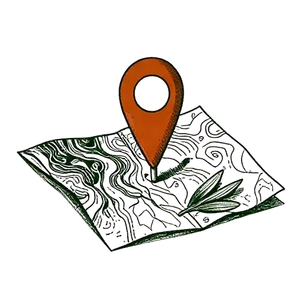
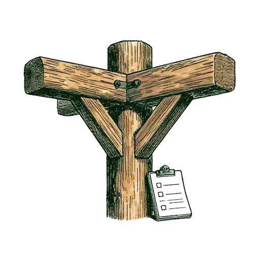
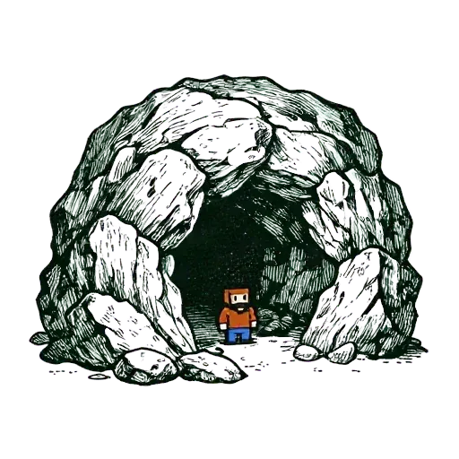

Fógra
fogra.quinn.ieA free planning map of Galway City and County. Planning applications, appeals and construction notices near you, explained in plain English.
Visit FógraPersonal projects,
built for the long run.
A trail of projects. Each one a way forward.

A free planning map of Galway City and County. Planning applications, appeals and construction notices near you, explained in plain English.
Visit Fógra
The stuff that binds a build together. Track a deep home renovation or retrofit — decisions, documents, contacts and items in one place. Invite only for now.
Visit Mortar